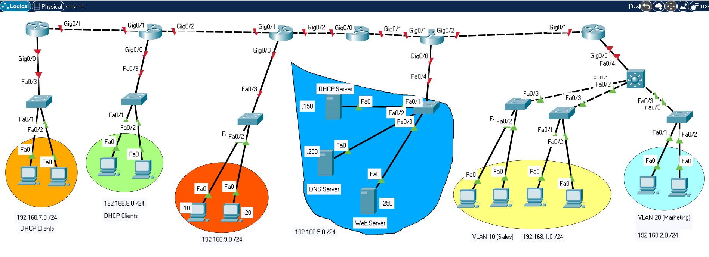

Exercise 1: IPv4 Routing and Access Control Lists.
Task 1: Download the starting PKT file
from here.

Task 2: Assign IPv4 addresses (shown on the annotations) to computers, switches and routers.
Task 3: Assign passwords for ssh (remote access), console (out-of-band access) and enable mode to switches and routers.
Task 4: Configure OSPF routing in the 6 Cisco routers. Test (partial) connectivity.
Task 5: Configure the DHCP server and the appropriate routers to enable DHCP forwarding.
Verify that the DHCP clients were assigned an IP address.
Task 6: Configure the DNS Server. Create a record named
www.krebnertech.com that points to the
web server. Test host name resolution from the other computers.
Task 7: Configure Inter-VLAN routing: remember to first create the VLANS and assign switchports
to those VLANS. Verify connectivity.
Task 8: Configure and assign a named ACL to block DHCP traffic from the DHCP clients.
Verify the blocking.
Task 9: Configure and assign a named ACL to block DNS traffic coming from the 192.168.8.0 /24 network.
Verify the blocking. Modify the ACL to include blocking HTTP and FTP traffic coming from that same network.